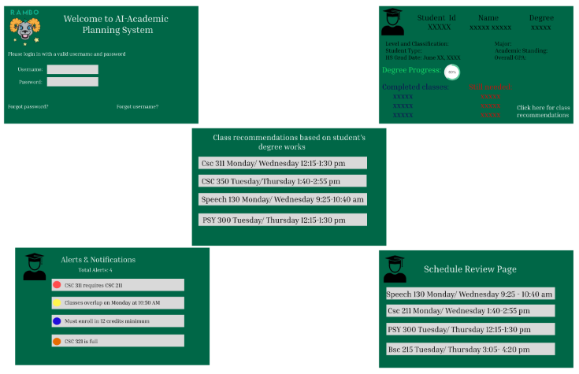
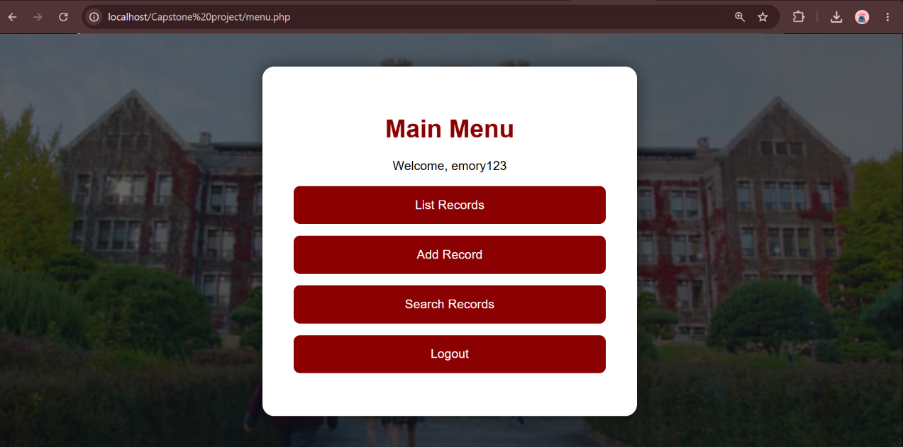
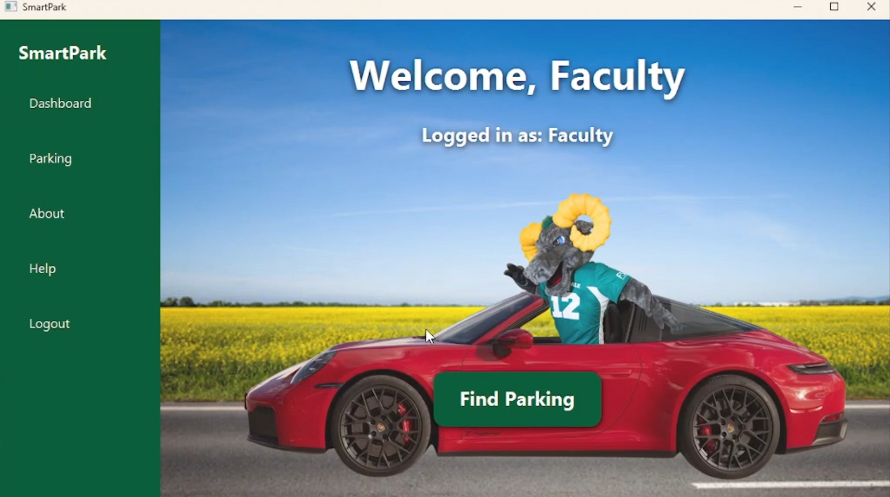
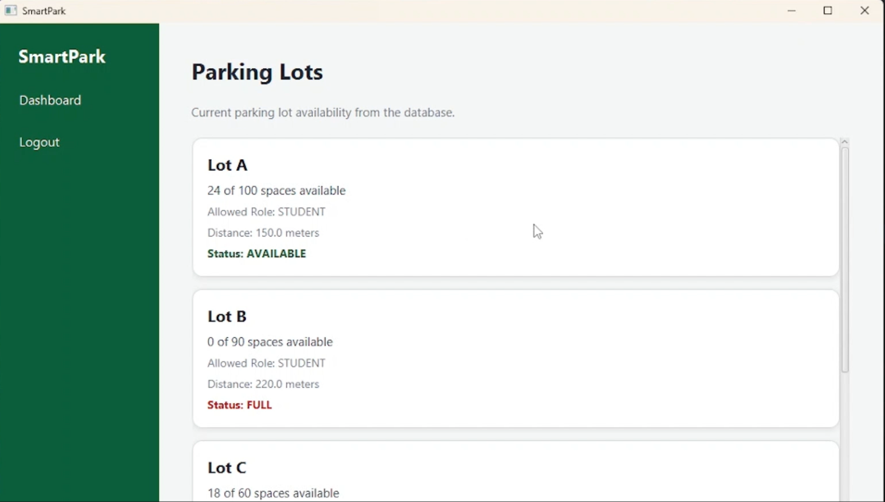
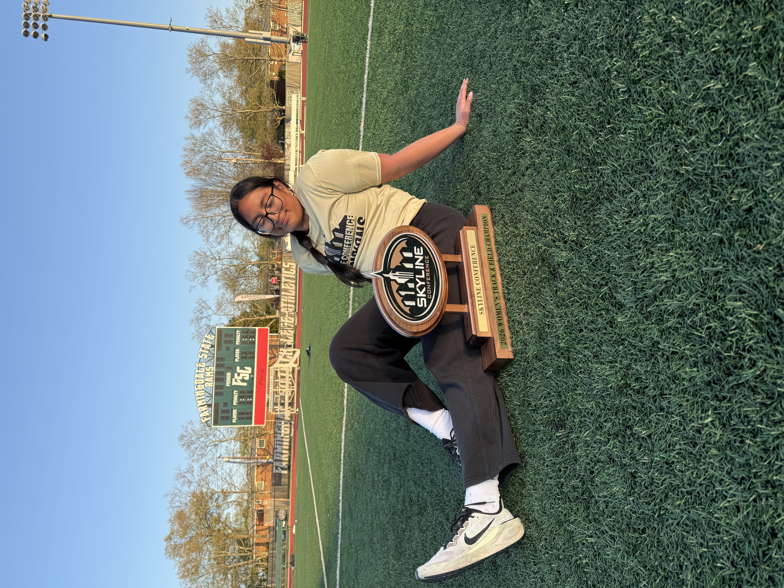

A Computer Programming and Information Systems Student.
View My ProjectsHello everyone! My name is Claudia Gonzalez, I am currently a student at Farmingdale State College majoring in Computer Programming and Information Systems. I am expected to graduate this upcoming Spring 2027. I have developed a strong interest in working with data, especially learning how to organize, manage, and analyze information in order to solve problems.
June 2026 - Present
I recently started working at BJ's the end of June of 2026 as a Front Line Cashier. In this role I assist customers with their purchases, handle transactions, and provide excellent customer service. As well as helping out in self checkout register when needed.
November 2023 - July 2026
I worked at American Eagle Outfitters for almost 3 years, I started off as a regular employee and got promoted to Senior Brand Ambassador. In this role I was in charge of the register and was the main cashier for the store. I had to help accomplish sales and loyalty signup goals and also be a role model for the other employees. This job taught me how to work in a fast-paced environment, leadership, and communication skills.

This project is an AI-powered academic planning system to help students plan their academic schedule and find out what courses they need to take at any time of the day without having to wait for an advisor. My team used meetings to help create functional and non-functional requirements to plan how our project would look like and achieve that final look in the real world. I used Figma to create a demo of what the system would look like.

Created a student system that adds, drops, lists, and updates students in a database. This project was developed using Java and MySQL. I also used CSS to make the interface more visually appealing.


I collaborated with my software engineering team to create an application to help people on campus to find parking spots quicker. My role in this project was a tester. I tested the frontend and backend of the project to help ensure that the project was working properly and that there were no bugs. I also designed the login screen for our system.
Dean's List - Spring 2025
President's List - Spring 2026

I am a member of the Women's Track & Field team here at Farmingdale State College. Last year we won Skyline and I contributed to the team by earning a total of 8 points with competing in discus and hammer throw. Track has been a major part of my life, it has taught me how to be disciplined, work well in a team, and how to manage my time wisely being a student-athlete.
I am an active member of Supporting Women in Computing (SWiC), where I have opportunities to build my networking and communication skills within my department.
If you would like to get in touch with me, please feel free to reach out.